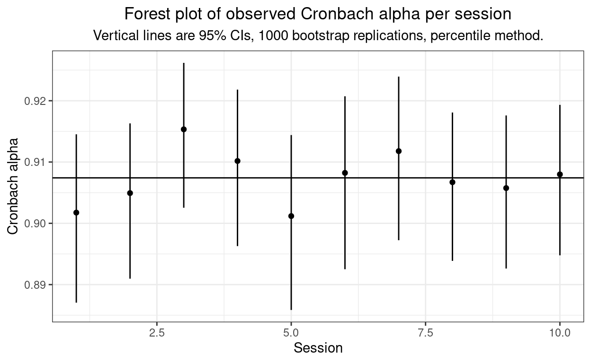

This extends https://www.psyctc.org/Rblog/posts/2021-02-07-why-pipe-why-the-tidyverse/ and introduces rowwise()
This is a slight adaptation of a file I did for Emily (https://www.researchgate.net/profile/Emily_Blackshaw2) back in October 2020 when she and wanted to look at whether Cronbach’s alpha for the YP-CORE varied from session to session across help-seeking clients data: a very basic exploration of longitudinal measurement invariance. I realised it was a good chance for me to pull together what I had been learning back then about piping and to share it with her.
As a page here it probably should have come before https://www.psyctc.org/Rblog/posts/2021-02-07-why-pipe-why-the-tidyverse/, or been woven into that, but I had managed to lose the file (worrying). However, I think it complements what I put in there and it does introduce the rowwise() function and c_across().
As is my wont, I prefer to explore methods with simulated data so the first step was to make such data. Here I am simulating 500 clients each having ten sessions and just a five item questionnaire (the YP-CORE has ten items but five is quicker and fits output more easily!)
### make some nonsense data
library(tidyverse)
nParticipants <- 500
nSessions <- 10
### give myself something to start with: the sessions
session <- rep(1:nSessions, nParticipants) # 1,2,3 ...10, 1,23 ...10 ...
session %>%
as_tibble() %>% # turn from vector to tibble, that means I have rename it back to the vector name!
rename(session = value) %>%
mutate(baseVar = rnorm(nParticipants*nSessions), # this creates a new variable in the tibble and sort of reminds me that variables may be vectors
item1 = baseVar + 0.7*rnorm(nParticipants*nSessions), # creates a first item
item2 = baseVar + 0.7*rnorm(nParticipants*nSessions), # and a second
item3 = baseVar + 0.7*rnorm(nParticipants*nSessions), # and a third
item4 = baseVar + 0.7*rnorm(nParticipants*nSessions), # and a 4th ...
item5 = baseVar + 0.7*rnorm(nParticipants*nSessions)) -> tmpDat
### look at it
tmpDat
# A tibble: 5,000 x 7
session baseVar item1 item2 item3 item4 item5
<int> <dbl> <dbl> <dbl> <dbl> <dbl> <dbl>
1 1 0.00631 -0.194 -0.280 0.0798 -0.331 -0.420
2 2 2.71 2.39 2.94 2.15 3.45 1.64
3 3 -0.868 -0.413 -0.709 -0.938 -1.45 -0.662
4 4 -0.601 -1.51 -1.43 -0.177 -0.541 -0.979
5 5 -0.478 -1.26 -1.22 0.0396 0.667 -0.668
6 6 0.449 0.517 1.06 0.526 0.645 -0.695
7 7 -0.0757 0.413 0.868 0.163 -0.549 0.192
8 8 -0.599 0.0248 -1.97 -0.0925 -1.53 0.944
9 9 -0.0810 0.576 0.830 -0.121 -0.0841 -0.503
10 10 1.79 0.944 1.41 2.31 1.28 1.97
# … with 4,990 more rows### check the simple correlation
cor(tmpDat[, 3:7])
item1 item2 item3 item4 item5
item1 1.0000000 0.6799230 0.6699420 0.6748932 0.6769445
item2 0.6799230 1.0000000 0.6661796 0.6793697 0.6839315
item3 0.6699420 0.6661796 1.0000000 0.6631769 0.6702323
item4 0.6748932 0.6793697 0.6631769 1.0000000 0.6729270
item5 0.6769445 0.6839315 0.6702323 0.6729270 1.0000000### OK, I can play with that, here's the overall alpha (meaningless even for the simulation really but just checking)
psychometric::alpha(tmpDat[, 3:7])
[1] 0.9117041OK. Now I could start playing with the data in the tidyverse/dplyr/piping way. The key thing to remember is that the default behaviour of mutate() or summarise() within group_by() in dplyr is for a function to act on a vertical vector, i.e. on a variable
tmpDat %>%
group_by(session) %>%
summarise(mean1 = mean(item1))
# A tibble: 10 x 2
session mean1
* <int> <dbl>
1 1 -0.0335
2 2 -0.00275
3 3 0.0434
4 4 -0.0244
5 5 0.0716
6 6 0.0271
7 7 0.103
8 8 -0.0995
9 9 -0.0311
10 10 -0.0835 So that simply got us the mean for item1 across all completions but broken down by session. Trivial dplyr/piping but I still find it satisfying in syntax and in its utility.
As introduced in https://www.psyctc.org/Rblog/posts/2021-02-07-why-pipe-why-the-tidyverse/, if I have a function that returns more than one value dplyr handles this nicely but I have to tell it the function is creating a list (even if it’s just a vector), as below. The catch to remember is that you then have to unnest() the list to see its values, usually unnest_wider() is what I want but there is unnest_longer().
# A tibble: 10 x 7
session Min. `1st Qu.` Median Mean `3rd Qu.` Max.
<int> <dbl> <dbl> <dbl> <dbl> <dbl> <dbl>
1 1 -4.20 -0.941 -0.0607 -0.0335 0.847 4.29
2 2 -4.44 -0.853 0.0633 -0.00275 0.816 3.24
3 3 -3.34 -0.791 0.0556 0.0434 0.840 4.36
4 4 -3.74 -0.816 -0.0150 -0.0244 0.744 3.68
5 5 -3.26 -0.787 0.103 0.0716 1.02 3.61
6 6 -3.55 -0.731 -0.00969 0.0271 0.767 3.32
7 7 -3.32 -0.724 0.0880 0.103 0.959 4.52
8 8 -4.14 -0.910 -0.111 -0.0995 0.746 3.13
9 9 -4.62 -0.815 -0.0212 -0.0311 0.810 3.34
10 10 -3.88 -0.908 -0.0993 -0.0835 0.691 3.60### names are messy but it is easy to solve that ...
tmpDat %>%
group_by(session) %>%
summarise(summary1 = list(summary(item1))) %>%
unnest_wider(summary1) %>%
### sometimes you have to clean up names that start
### with numbers or include spaces if you want to avoid backtick quoting
rename(Q1 = `1st Qu.`,
Q3 = `3rd Qu.`)
# A tibble: 10 x 7
session Min. Q1 Median Mean Q3 Max.
<int> <dbl> <dbl> <dbl> <dbl> <dbl> <dbl>
1 1 -4.20 -0.941 -0.0607 -0.0335 0.847 4.29
2 2 -4.44 -0.853 0.0633 -0.00275 0.816 3.24
3 3 -3.34 -0.791 0.0556 0.0434 0.840 4.36
4 4 -3.74 -0.816 -0.0150 -0.0244 0.744 3.68
5 5 -3.26 -0.787 0.103 0.0716 1.02 3.61
6 6 -3.55 -0.731 -0.00969 0.0271 0.767 3.32
7 7 -3.32 -0.724 0.0880 0.103 0.959 4.52
8 8 -4.14 -0.910 -0.111 -0.0995 0.746 3.13
9 9 -4.62 -0.815 -0.0212 -0.0311 0.810 3.34
10 10 -3.88 -0.908 -0.0993 -0.0835 0.691 3.60Again, as I introduced in https://www.psyctc.org/Rblog/posts/2021-02-07-why-pipe-why-the-tidyverse/, I can extend this to handle more than one vector/variable at a time if they’re similar and I’m doing the same to each.
tmpDat %>%
group_by(session) %>%
summarise(across(starts_with("item"), ~mean(.x)))
# A tibble: 10 x 6
session item1 item2 item3 item4 item5
* <int> <dbl> <dbl> <dbl> <dbl> <dbl>
1 1 -0.0335 0.0376 0.0144 -0.0350 -0.00901
2 2 -0.00275 0.0188 0.0404 0.00395 0.0376
3 3 0.0434 0.0526 0.0794 -0.0348 0.00194
4 4 -0.0244 -0.0320 -0.0594 -0.0144 -0.0160
5 5 0.0716 0.0197 0.0151 0.0777 0.0842
6 6 0.0271 -0.00327 0.0127 0.0834 0.00580
7 7 0.103 0.0951 0.0690 0.0499 0.0918
8 8 -0.0995 -0.0370 -0.0687 -0.106 -0.102
9 9 -0.0311 -0.0550 0.0211 -0.0338 0.0361
10 10 -0.0835 -0.0144 -0.0844 -0.0772 -0.0163 I can also do that with the following syntax. I have not yet really understood why the help for across() gives that one with function syntax (“~”) and the explicit call of ".x) rather than this and I really ought to get my head around the pros and cons of each.
tmpDat %>%
group_by(session) %>%
summarise(across(starts_with("item"), mean))
# A tibble: 10 x 6
session item1 item2 item3 item4 item5
* <int> <dbl> <dbl> <dbl> <dbl> <dbl>
1 1 -0.0335 0.0376 0.0144 -0.0350 -0.00901
2 2 -0.00275 0.0188 0.0404 0.00395 0.0376
3 3 0.0434 0.0526 0.0794 -0.0348 0.00194
4 4 -0.0244 -0.0320 -0.0594 -0.0144 -0.0160
5 5 0.0716 0.0197 0.0151 0.0777 0.0842
6 6 0.0271 -0.00327 0.0127 0.0834 0.00580
7 7 0.103 0.0951 0.0690 0.0499 0.0918
8 8 -0.0995 -0.0370 -0.0687 -0.106 -0.102
9 9 -0.0311 -0.0550 0.0211 -0.0338 0.0361
10 10 -0.0835 -0.0144 -0.0844 -0.0772 -0.0163 Again, as I introduced in https://www.psyctc.org/Rblog/posts/2021-02-07-why-pipe-why-the-tidyverse/, I can do multiple functions of the same items
tmpDat %>%
group_by(session) %>%
summarise(across(starts_with("item"), list(mean = mean, sd = sd)))
# A tibble: 10 x 11
session item1_mean item1_sd item2_mean item2_sd item3_mean item3_sd
* <int> <dbl> <dbl> <dbl> <dbl> <dbl> <dbl>
1 1 -0.0335 1.25 0.0376 1.25 0.0144 1.22
2 2 -0.00275 1.28 0.0188 1.21 0.0404 1.21
3 3 0.0434 1.26 0.0526 1.25 0.0794 1.26
4 4 -0.0244 1.20 -0.0320 1.20 -0.0594 1.18
5 5 0.0716 1.25 0.0197 1.25 0.0151 1.21
6 6 0.0271 1.12 -0.00327 1.18 0.0127 1.14
7 7 0.103 1.25 0.0951 1.22 0.0690 1.20
8 8 -0.0995 1.25 -0.0370 1.25 -0.0687 1.23
9 9 -0.0311 1.18 -0.0550 1.23 0.0211 1.21
10 10 -0.0835 1.18 -0.0144 1.24 -0.0844 1.19
# … with 4 more variables: item4_mean <dbl>, item4_sd <dbl>,
# item5_mean <dbl>, item5_sd <dbl>I like that that names things sensibly
I said the default behaviour of mutate() and summarise() is to work on variables, i.e. vectors, whether that is to work on all the values of the variable if there is no group_by(), or within the groups if there is a grouping. If I want to do something on individual values, i.e. by rows, “rowwise”, then I have to use rowwise() which basically treats each row as a group.
If, as you often will in that situation, you want to use a function of more than one value, i.e. values from more than one variable, then you have to remember to use c_across() now, not across(): “c_” as it’s by column.
You also have to remember to ungroup() after any mutate() as you probably don’t want future functions to handle things one row at a time.
# A tibble: 5 x 8
session baseVar item1 item2 item3 item4 item5 mean
<int> <dbl> <dbl> <dbl> <dbl> <dbl> <dbl> <dbl>
1 1 0.00631 -0.194 -0.280 0.0798 -0.331 -0.420 -0.229
2 2 2.71 2.39 2.94 2.15 3.45 1.64 2.51
3 3 -0.868 -0.413 -0.709 -0.938 -1.45 -0.662 -0.835
4 4 -0.601 -1.51 -1.43 -0.177 -0.541 -0.979 -0.926
5 5 -0.478 -1.26 -1.22 0.0396 0.667 -0.668 -0.488OK, so that’s recapped these things, now what about if I want to look at multiple columns and multiple rows? the trick seems to be cur_data().
That gives me a sensible digression from Cronbach’s alpha here as I often find I’m wanting to get correlation matrices when I’m wanting to get alpha (and its CI) and I think getting correlation matrices from grouped data ought to be much easier than it is!
# A tibble: 1 x 25
...1 ...2 ...3 ...4 ...5 ...6 ...7 ...8 ...9 ...10 ...11
<dbl> <dbl> <dbl> <dbl> <dbl> <dbl> <dbl> <dbl> <dbl> <dbl> <dbl>
1 1 0.680 0.670 0.675 0.677 0.680 1 0.666 0.679 0.684 0.670
# … with 14 more variables: ...12 <dbl>, ...13 <dbl>, ...14 <dbl>,
# ...15 <dbl>, ...16 <dbl>, ...17 <dbl>, ...18 <dbl>, ...19 <dbl>,
# ...20 <dbl>, ...21 <dbl>, ...22 <dbl>, ...23 <dbl>, ...24 <dbl>,
# ...25 <dbl>That, as you can see, is a right old mess!
but we can use correlate() from the corrr package:
tmpDat %>%
select(item1:item5) %>%
corrr::correlate()
# A tibble: 5 x 6
term item1 item2 item3 item4 item5
<chr> <dbl> <dbl> <dbl> <dbl> <dbl>
1 item1 NA 0.680 0.670 0.675 0.677
2 item2 0.680 NA 0.666 0.679 0.684
3 item3 0.670 0.666 NA 0.663 0.670
4 item4 0.675 0.679 0.663 NA 0.673
5 item5 0.677 0.684 0.670 0.673 NA As you see, corrr::correlate() puts NA in the leading diagonal not 1.0. That does make finding the maximum off diagonal correlations easy but I confess it seems wrong to me!
What about using that and group_by()?
tmpDat %>%
select(-baseVar) %>%
group_by(session) %>%
corrr::correlate()
# A tibble: 6 x 7
term session item1 item2 item3 item4 item5
<chr> <dbl> <dbl> <dbl> <dbl> <dbl> <dbl>
1 session NA -0.0146 -0.0152 -0.0200 -0.0114 -0.00498
2 item1 -0.0146 NA 0.680 0.670 0.675 0.677
3 item2 -0.0152 0.680 NA 0.666 0.679 0.684
4 item3 -0.0200 0.670 0.666 NA 0.663 0.670
5 item4 -0.0114 0.675 0.679 0.663 NA 0.673
6 item5 -0.00498 0.677 0.684 0.670 0.673 NA Hm, that completely ignores the group_by() and includes session variable. That seems plain wrong to me. I feel sure this is something the package will eventually change but for now I need another way to get what I want.
tmpDat %>%
select(-baseVar) %>%
group_by(session) %>%
corrr::correlate(cur_data())
I have not evaluated that as it stops with the moderately cryptic error message which I’m putting in here as I quite often forget the summarise(x = ) bit
# Error: `cur_data()` must only be used inside dplyr verbs.
# Run `rlang::last_error()` to see where the error occurred.So let’s fix that.
tmpDat %>%
select(-baseVar) %>%
group_by(session) %>%
summarise(cor = corrr::correlate(cur_data()))
# A tibble: 50 x 2
# Groups: session [10]
session cor$term $item1 $item2 $item3 $item4 $item5
<int> <chr> <dbl> <dbl> <dbl> <dbl> <dbl>
1 1 item1 NA 0.711 0.711 0.715 0.678
2 1 item2 0.711 NA 0.704 0.699 0.714
3 1 item3 0.711 0.704 NA 0.700 0.677
4 1 item4 0.715 0.699 0.700 NA 0.693
5 1 item5 0.678 0.714 0.677 0.693 NA
6 2 item1 NA 0.669 0.670 0.690 0.679
7 2 item2 0.669 NA 0.644 0.679 0.680
8 2 item3 0.670 0.644 NA 0.664 0.704
9 2 item4 0.690 0.679 0.664 NA 0.679
10 2 item5 0.679 0.680 0.704 0.679 NA
# … with 40 more rowsHm. That does get me the analyses I want but in what is, to my mind, a very odd structure.
OK, after that digression into the corrr package, let’s get to what Emily actually wanted: Cronbach’s alpha across the items but per session.
tmpDat %>%
select(-baseVar) %>%
group_by(session) %>%
summarise(alpha = psychometric::alpha(cur_data()))
# A tibble: 10 x 2
session alpha
* <int> <dbl>
1 1 0.921
2 2 0.912
3 3 0.919
4 4 0.903
5 5 0.908
6 6 0.901
7 7 0.911
8 8 0.912
9 9 0.910
10 10 0.915I get my CI around alpha using the following code.
psychometric::alpha(tmpDat[, 3:7])
[1] 0.9117041[1] 0.9117041bootReps <- 1000
getCIAlphaDF3 <- function(dat, ciInt = .95, bootReps = 1000) {
tmpRes <- boot::boot(na.omit(dat), getAlphaForBoot, R = bootReps)
tmpCI <- boot::boot.ci(tmpRes, conf = ciInt, type = "perc")$percent[4:5]
return(data.frame(alpha = tmpRes$t0,
LCL = tmpCI[1],
UCL = tmpCI[2]))
}
getCIAlphaDF3(tmpDat[, 3:7])
alpha LCL UCL
1 0.9117041 0.9079198 0.915301Actually, now I have my CECPfuns package I create a better, more robust function for this, but later!
So that’s the overall Cronbach alpha with bootstrap confidence interval.
Can also do that within a group_by() grouping.
tmpDat %>%
select(-baseVar) %>%
group_by(session) %>%
summarise(alpha = list(getCIAlphaDF3(cur_data()))) %>%
unnest_wider(alpha)
# A tibble: 10 x 4
session alpha LCL UCL
<int> <dbl> <dbl> <dbl>
1 1 0.921 0.910 0.931
2 2 0.912 0.900 0.923
3 3 0.919 0.908 0.929
4 4 0.903 0.889 0.916
5 5 0.908 0.894 0.919
6 6 0.901 0.885 0.915
7 7 0.911 0.895 0.923
8 8 0.912 0.899 0.923
9 9 0.910 0.895 0.921
10 10 0.915 0.903 0.926And that was nice and easy to feed into a forest style plot, as follows.
tmpDat %>%
select(-baseVar) %>%
group_by(session) %>%
summarise(alpha = list(getCIAlphaDF3(cur_data()))) %>%
unnest_wider(alpha) -> tmpTib
psychometric::alpha(tmpDat[, 3:7]) -> tmpAlphaAll
ggplot(data = tmpTib,
aes(x = session, y = alpha)) +
geom_point() + # get the observed alphas in as points
geom_linerange(aes(ymin = LCL, ymax = UCL)) + # add the CIs as lines
geom_hline(yintercept = tmpAlphaAll) + # not really very meaningful to have an overall alpha but
# perhaps better than not having a reference line
xlab("Session") +
ylab("Cronbach alpha") +
ggtitle("Forest plot of observed Cronbach alpha per session",
subtitle = paste0("Vertical lines are 95% CIs, ",
bootReps,
" bootstrap replications, percentile method.")) +
theme_bw() + # nice clean theme
theme(plot.title = element_text(hjust = .5), # centre the title
plot.subtitle = element_text(hjust = .5)) # and subtitle

Well, as you’d expect from the simulation method, no evidence of heterogeneity of Cronbach’s alpha across sessions!
I hope this is a useful further introduction to piping, dplyr and some of the tidyverse approach. I guess it introduced the corrr package, cur_data() and rowwise() … and it finished with a, for me, typical use of ggplot() (from the ggplot2 package.)
Do contact me if you have any comments, suggestions, corrections, improvements … anything!
Text and figures are licensed under Creative Commons Attribution CC BY-SA 4.0. The figures that have been reused from other sources don't fall under this license and can be recognized by a note in their caption: "Figure from ...".